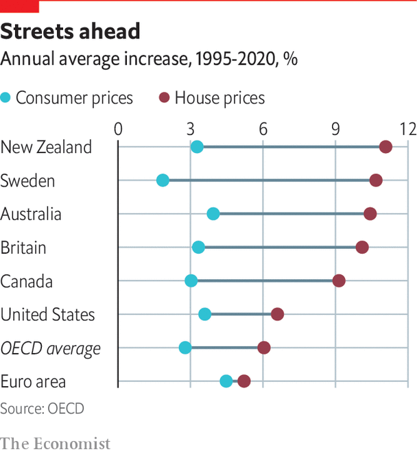

Why don’t rising house prices count towards inflation?
Property values have increased much faster than other costs of living
MEASURING INFLATION is among the most important jobs a statistician has. Consumer price indices (CPIs) determine how much pensions and benefits increase, anchor negotiations between workers and firms over pay, and guide central banks when they decide how to set interest rates. Yet official measures of inflation tend to ignore one of the most important purchases many people make. Why aren’t house prices included in measures of inflation? Should they be?

In most advanced economies, house prices have grown much faster than consumer prices over the past 25 years (see chart). Many commentators claim this means inflation is systematically understated. New Zealand’s government has asked the central bank to explain the impact its interest-rate decisions have on house prices. And the question of whether rising housing costs were getting enough attention was a significant theme in the European Central Bank’s (ECB) recent strategy review.
Governments first paid proper attention to measuring inflation around the time of the first world war, when they knew prices were rising and wanted to make sure workers’ pay kept pace with living costs. Initially the indices were focused on food prices, but more goods and services were added over time. The list would typically be reviewed regularly, but some elements, like housing, were hotly debated. House prices were included in America’s CPI between 1953 and 1983 before being removed. This was partly because indexing benefits and pensions to inflation had become expensive and some politicians wanted to bring measured inflation down.
So why doesn’t CPI include house prices? Inflation is a measure of the costs of buying goods and services for consumption today. A house provides shelter and security to those who live in it, but the value of those services is dwarfed by the price of the house. So buying a house is about investment rather than current consumption. Although some goods in the inflation basket, such as cars and refrigerators, also yield services over several years they typically depreciate faster than a house, and so the difference between the value of the services and the price paid is much less extreme. (Houses do depreciate over time but not to zero. If you did no repairs on a house it would lose much of its value although the land it stood on would not.) That is not to say that inflation measures should ignore housing altogether. Most existing measures include the cost of renting and maintaining a property, since those involve consuming a service today. Some more sophisticated indices include other housing costs too, such as mortgage-interest payments or an estimate of the rent that owner-occupiers sacrifice by living in the house rather than renting it. These perhaps hint at measures the ECB might start to emphasise in the future—the “consumer cost of an owner-occupied house”, not the property’s price.
Including house prices, which can be volatile, in inflation would be difficult. And it is not straightforward to calculate the proportion of consumer spending directed towards buying houses. A person could go 20 years between two house purchases, and then might spend more than eight times their annual income on it. But many people also sell a home at the same time as buying a new one, so what matters for their spending is the relative movement in the price of the two properties. Economists are well aware of the social and political tensions surrounding house prices. But putting them directly into inflation is not likely to make them more affordable. It might even force central banks to raise interest rates. In New Zealand, giving monetary policymakers more responsibility for house prices was largely a political gesture. Other policy changes, like tightening loan-to-value requirements on new mortgages, have been more effective. Governments should sort out the inefficiencies in today’s housing markets, rather than make them somebody else’s problem.